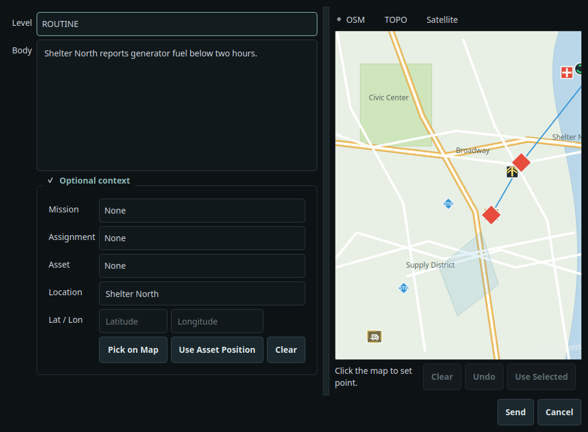
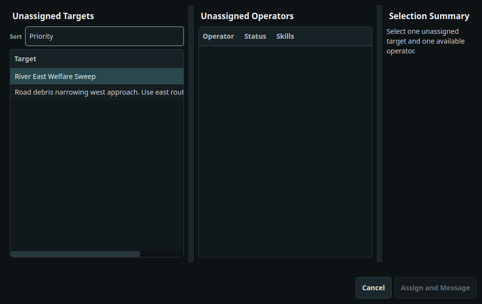

Client navigation
Network and local UI controls
Client navigation
Network and local UI controls
T.A.L.O.N.
Installation, setup, enrollment, Reticulum configuration, and field desktop operation.
The TALON client desktop is the field operator interface. It unlocks a local encrypted database, enrolls to a server with a one-time token, syncs over Reticulum, and provides operational workflows without server-only administration pages.
Client operators can work with maps, SITREPs, assets, mission requests, assigned work, chat, synced documents, and their own operator profile. Server authority remains responsible for enrollment, lease renewal, revocation, audit review, key status, destructive deletes, mission approval, and document upload.
Client navigation
Network and local UI controls
Use the client-specific Linux artifact. The installer reads the role marker from the extracted bundle and creates a client launcher.
tar -xzf talon-desktop-client-linux.tar.gz cd talon-desktop-client-linux bash ./install.sh --yes
| Item | Default path or name |
|---|---|
| Launcher | ~/.local/bin/talon-desktop-client |
| Desktop entry | talon-desktop-client.desktop, displayed as T.A.L.O.N. Client |
| Data directory | ~/.talon |
| Application config | ~/.talon/talon.ini |
| TALON Reticulum config | ~/.talon/reticulum/config |
| Document cache | ~/.talon/documents |
| Launcher log | ${XDG_STATE_HOME:-~/.local/state}/talon/desktop-client-launcher.log |
| Option | Use |
|---|---|
--yes | Assume yes for supported system package managers. |
--no-deps | Skip system runtime dependency installation. |
--no-bin | Skip role-specific launcher wrapper creation. |
--no-desktop | Skip desktop entry creation. |
--smoke-test | Run the installed package smoke test. |
--uninstall --confirm-delete "DELETE TALON DATA" | Remove local TALON desktop files, data, identities, documents, logs, and launchers. |
DELETE TALON DATA.Launch talon-desktop-client. Enter the local database passphrase and select Unlock. A fresh client remains on the unlock surface until Reticulum setup and enrollment are complete.

Network setup is available only after the encrypted database is unlocked. The client uses a TALON-owned Reticulum config under the client data directory. Match the client template to the server deployment path.
 Client config path
Choose the matching client transport
Validate, save, then continue
Client config path
Choose the matching client transport
Validate, save, then continue
A server operator must generate a one-time token. Paste the full TOKEN:SERVER_HASH value, enter the assigned callsign, and select Enroll Client. Enrollment requires the client Reticulum config to reach the server.
 Paste TOKEN:SERVER_HASH
Enroll after callsign entry
Paste TOKEN:SERVER_HASH
Enroll after callsign entry
After enrollment, the client main window shows Map, Chat, Missions, SITREPs, Assets, Assignments, Documents, Operators, and Dashboard. Server-only Enrollment, Audit, and Keys pages are not visible in client mode. The status bar shows core unlock state, the redacted network method, Network Setup, Theme, Font, and Logs.
The Map page shows selectable base layers and TALON overlays for assets, mission routes, mission locations, assignments, operator pings, and located SITREPs. Operators can focus a mission, filter visible assets, select overlays, and send a manual Ping Location marker.
 Layer and mission controls
Selection, pings, and SITREPs
Layer and mission controls
Selection, pings, and SITREPs
Client operators can create SITREPs, filter by severity, append follow-up information, and assign unresolved reports to available operators. Server-only delete is not shown. FLASH and FLASH_OVERRIDE audio remains opt-in.


Client operators can create and edit assets, type coordinates, or pick a location on the map. Client deletion uses a request flow; server mode performs final hard delete. Verification depends on authority and asset authorship policy.


Client mode labels mission creation as a request. Mission requests can include requested assets, requested team lead, requested team members, AO polygon, route, timing, support notes, objectives, constraints, and key locations. The server approves or rejects requested missions.


The Assignment Board shows assigned mission and SITREP follow-up work, operator availability, unassigned work candidates, and pending sync. Client operators can open assigned targets, message assigned operators, and use available assignment workflows allowed by current authority.


Chat includes grouped channels, default channels, visible mission channels, custom channels, direct-message channels, urgent messages, grid-reference attachments, operator presence, and alert summaries. Delete controls are server-only.


Client mode receives synced document metadata and can download documents through the active sync session. Upload, repository management, and delete are server-only; the client UI displays that restriction directly.
 Upload is server-only
Upload is server-only
The Operators page shows the enrolled operator roster and lets a client edit its own profile when permitted. Profile editing includes display name, role, notes, predefined skills, and custom skills.


If the server revokes an operator or the lease state requires lockout, the client presents a modal lock window. Normal operation remains blocked until the condition is resolved by server authority or the operator quits.

The client unlocks a local SQLCipher database. The passphrase derives the local key used for database and protected local material.
Reticulum identity material belongs in the TALON client data directory. Do not reuse a server Reticulum directory or another role profile.
TALON sync traffic uses Reticulum. The desktop reports only the transport family, not addresses, ports, peers, or device names.
Downloads are verified before save. Macro-capable office formats trigger a risk warning before opening or saving.
| Issue | Action |
|---|---|
| Application will not launch. | Run talon-desktop-client --smoke --mode client or reinstall with --smoke-test. Check the launcher log path listed above. |
| Enrollment fails. | Confirm the token is unexpired, the full TOKEN:SERVER_HASH value was pasted, the callsign is entered, and Reticulum can reach the server. |
| Network setup keeps appearing. | Unlock, open Network Setup, validate the TALON Reticulum config, save or continue, then restart if Reticulum was already running. |
| Document upload is unavailable. | This is expected in client mode. Server mode owns document upload and repository management. |
| Operator is locked or revoked. | Contact the server operator for lease renewal, revocation review, or re-enrollment guidance. |
| Direct TCP warning appears. | The active Reticulum method is direct TCP. Change to Yggdrasil, i2pd, LoRa, or a trusted VPN-backed path if address privacy matters. |